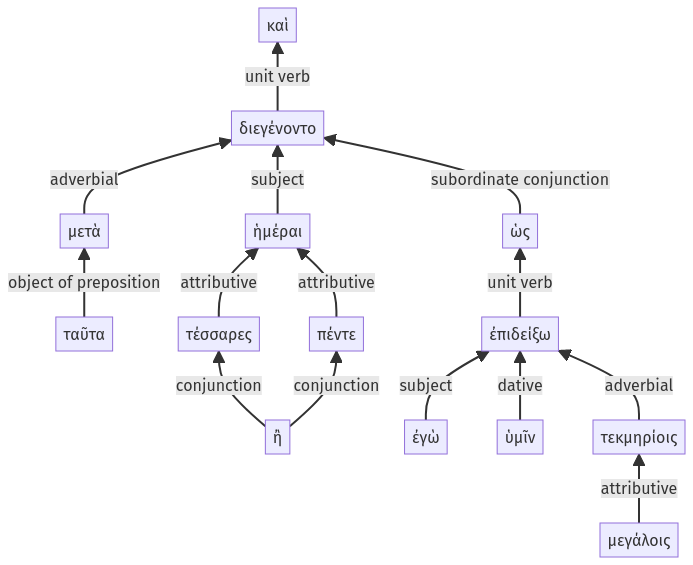

Lysias, Oration 1, 1.22.4-1.22.17a
1.22.1-1.22.3a | 1.22.18-1.22.26a
Sentence 58
1.22.4-1.22.17a
καὶ μετὰ ταῦτα διεγένοντο ἡμέραι τέσσαρες ἢ πέντε, ὡς ἐγὼ μεγάλοις ὑμῖν τεκμηρίοις ἐπιδείξω.
1 μετὰ ταῦτα διεγένοντο ἡμέραι τέσσαρες ἢ πέντε
2 ὡς ἐγὼ μεγάλοις ὑμῖν τεκμηρίοις ἐπιδείξω
καὶ μετὰ ταῦτα διεγένοντο ἡμέραι τέσσαρες ἢ πέντε, ὡς ἐγὼ μεγάλοις ὑμῖν τεκμηρίοις ἐπιδείξω.
Highlighting:
- connecting words
- unit verb
- subject
- object
Color code:
- Independent clause (level 1, intransitive verb)
- Subordinate clause (level 2, transitive verb)
